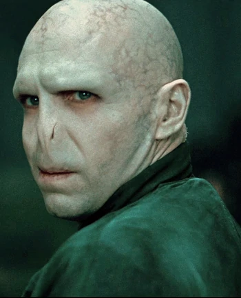
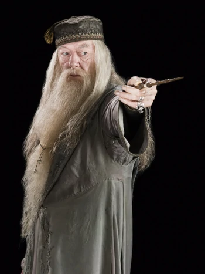
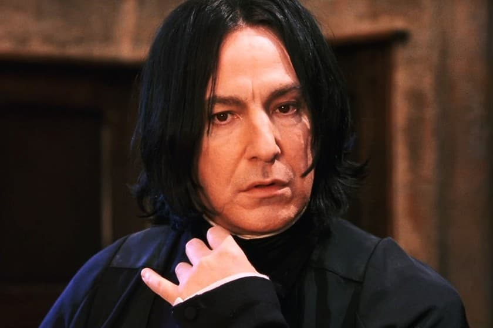
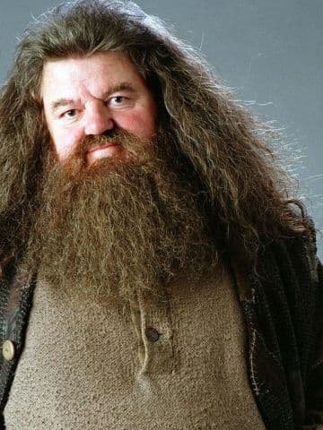
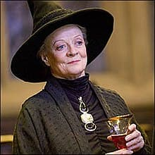
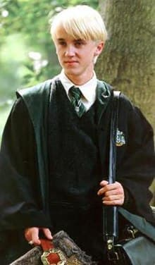
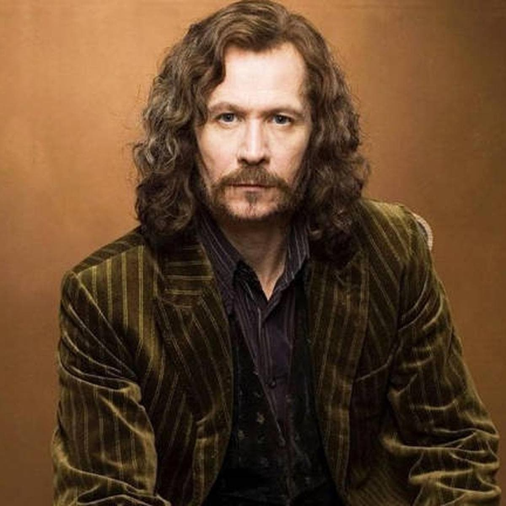

PERSONAJES PRINCIPALES
Harry James Potter
Es un mago de sangre mestiza y el único hijo de James y Lily Potter. Es la única persona conocida que ha sobrevivido a la maldición de Avada Kedavra, haciéndolo en dos ocasiones. Ambas veces la maldición fue conjurada por Lord Voldemort. A la edad de once años, Harry descubre que es un mago. Comienza a asistir a Hogwarts y es seleccionado en la Casa de Gryffindor. Se convierte en el mejor amigo de Ron Weasley y Hermione Granger y en el jugador de Quidditch más joven en más de un siglo.

Hermione Jean Granger
Es una bruja hija de muggles. El Sr. y Sra. Granger son dentistas en el mundo muggle. A los once años descubrió su don mágico y fue aceptada en el Colegio Hogwarts de Magia y Hechicería. Posee una mente académica brillante, y demostró ser una estudiante superdotada.

Ronald Weasley
Es un mago sangre pura, el sexto y más joven hijo de Arthur y Molly Weasley. También era el hermano menor de Bill, Charlie, Percy, Fred y George, y el hermano mayor de Ginny. Ron y sus hermanos y hermana vivían en la Madriguera, en las afueras de Ottery St. Catchpole.Ron comenzó a asistir al Colegio Hogwarts de Magia y Hechicería en 1991 y fue seleccionado para la Casa Gryffindor. Pronto se convirtió en el mejor amigo de su compañero Harry Potter y luego de Hermione Granger.

Lord Voldemort
Fue el mago tenebroso más poderoso de todos los tiempos. Siendo hijo del adinerado muggle Tom Ryddle Sr. y la bruja Merope Gaunt, nació con sangre mestiza, su madre murió poco después de dar a luz.Tom Ryddle fue durante su vida temprana considerado el alumno más talentoso que jamás hubiera asistido a Hogwarts.
Albus Dumbledore
Fue profesor de Transformaciones y más tarde director del Colegio Hogwarts de Magia y Hechicería. Fue a través de Albus que se formó la resistencia a la aparición de Lord Voldemort, ya que fue él quien fundó y dirigió la primera y segunda Orden del Fénix.
Severus Snape
Severus Snape era un mago de sangre mestiza, hijo de la bruja Eileen Prince, y del muggle Tobías Snape. Fue criado en una vivienda muggle de la calle de la Hilandera que estaba muy cerca de la casa de la familia Evans. Conoció a Lily y Petunia Evans cuando tenía nueve años, y se enamoró de Lily, convirtiéndose en el mejor amigo de ella. Fue Maestro de Pociones, profesor de Defensa Contra las Artes Oscuras y director de Hogwarts.
Rubeus Hagrid
Familiarmente conocido sólo por su apellido, "Hagrid", es un mago semi gigante, hijo del señor Hagrid y la giganta Fridwulfa y medio hermano del gigante Grawp. Asistió al Colegio Hogwarts de Magia y Hechicería y fue seleccionado para la Casa Gryffindor. Hagrid asumió el cargo de profesor de Cuidado de Criaturas Mágicas
Minerva McGonagall
Es una bruja escocesa sangre mestiza y una animaga registrada, la única hija del muggle Robert McGonagall y la bruja Isobel Ross. Después de su educación, Minerva trabajó durante dos años en el Ministerio de Magia y luego regresó a Hogwarts, donde se convirtió en Jefa de la Casa Gryffindor y profesora de Transformaciones.
Draco Malfoy
Es un mago de sangre pura y el único hijo de Lucius y Narcissa Malfoy. Por ser el hijo de un mortífago, a Draco le enseñaron a creer firmemente en la importancia de la pureza de sangre. Fue seleccionado en la Casa Slytherin. Durante sus años en Hogwarts, se hizo amigo de Vincent Crabbe, Gregory Goyle, Pansy Parkinson y otros compañeros de Slytherin, mientras él rápidamente desarrolló una rivalidad con Harry Potter.
Sirius Black
También conocido como Canuto u Hocicos, fue un mago de sangre pura, hijo de Orion y Walburga Black y hermano mayor de Regulus. Sirius fue enviado a Azkaban por doce años, eventualmente se convirtió en el primer caso conocido de fuga de la prisión tomando la forma de un gran perro negro debido a sus habilidades como Animago.
